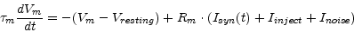
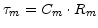

Subsections
LifNeuron
A standard leaky-integrate-and-fire neuron model is implemented where the membrane potential Vm of a neuron is given by

where
 is the membrane time constant, Rm is the membrane resistance, Isyn(t) is the current supplied by the synapses, Iinject is a non-specific background current and Inoise is a Gaussion random variable with zero mean and a given variance noise.
At time t=0 Vm ist set to Vinit . If Vm exceeds the threshold voltage Vthresh it is reset to Vreset and hold there for the length Trefract of the absolute refractory period.
The exponential Euler method is used for numerical integration.
- Cm (F) :
- The membrane capacity Cm
- Rm (Ohm) :
- The membrane resistance Rm
- Vthresh (V) :
- If Vm exceeds Vthresh a spike is emmited.
- Vresting (V) :
- The resting membrane voltage.
- Vreset (V) :
- The voltage to reset Vm to after a spike.
- Vinit (V) :
- The initial condition for Vm at time t=0.
- Trefract (sec) :
- The length of the absolute refractory period.
- Inoise (A) :
- The standard deviation of the noise to be added each integration time constant.
- Iinject (A) :
- A constant current to be injected into the LIF neuron.
- type :
- Type (e.g. inhibitory or excitatory) of the neuron
- Isyn :
- synaptic input current
- nIncoming :
- Number of incoming synapses
- nOutgoing :
- Number of outgoing synapses
- Vm (V) :
- The membrane voltage Vm